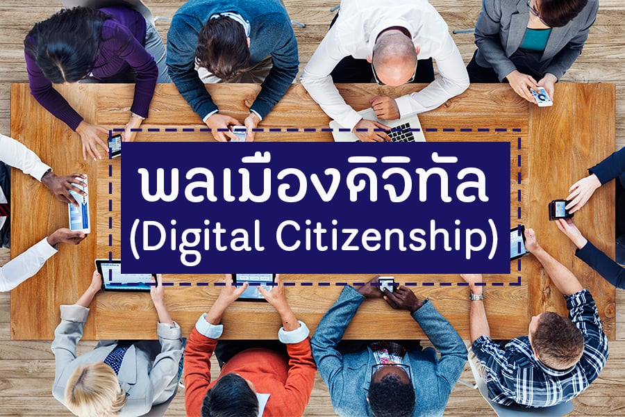

8 ทักษะความเป็นพลเมืองดิจิทัล
ซึ่ง 8 ทักษะสำคัญในการเป็นพลเมืองดิจิทัล ซึ่งจะทำให้อยู่ในสังคมได้อย่างเข้าใจและปลอดภัย ได้แก่
- ทักษะการรักษาอัตลักษณ์ที่ดีของตัวเอง (Digital Citizen Identity) ความสามารถในการสร้างและจัดการภาพลักษณ์ของตนเองในสื่อโซเชียลในเชิงบวกภายใต้พื้นฐานความเป็นจริง รับผิดชอบในการกระทำ ไม่กระทำการผิดกฎหมายละเมิดจริยธรรม
- ทักษะในการบริหารจัดการเวลาในโลกดิจิทัล (Screen Time Management) สามารถบริหารเวลาและควบคุมตนเองในโลกออนไลน์กับในชีวิตจริงได้อย่างสมดุล
- ทักษะการรับมือการกลั่นแกล้งบนโลกไซเบอร์ (Cyberbullying Management) มีความสามารถในการรับมือ ป้องกัน และมีภูมิคุ้มกันกับการข่มขู่บนโลกไซเบอร์อย่างเหมาะสม ไม่ใช้อารมณ์
- ทักษะการรักษาความปลอดภัยของตนเองบนโลกไซเบอร์ (Cybersecurity Management) ความสามารถในการป้องกันการถูกโจรกรรมข้อมูลหรือถูกโจมตีในโลกออนไลน์ได้ เช่น การกำหนดรหัสผ่านต่างๆ ให้ปลอดภัย
- ทักษะในการจัดการความเป็นส่วนตัว (Privacy Management) รักษาความเป็นส่วนตัวในโลกออนไลน์ของตนเองและผู้อื่นได้ เพื่อความปลอดภัยทางข้อมูล
- ทักษะการคิดวิเคราะห์อย่างมีวิจารณญาณ (Critical Thinking) สามารถคิดวิเคราะห์แยกแยะข้อมูลที่ถูกต้องหรือไม่ถูกต้อง วิเคราห์ข้อมูลที่เป็นประโยชน์ โดยใช้วิจารณญาณและการตรวจสอบที่ถูกต้อง เช่น ภาพตัดต่อต่างๆ
- ทักษะในการบริหารจัดการข้อมูล ร่องรอยทางดิจิทัล (Digital Footprint) สามารถในการคิด เข้าใจความเป็นไปในโลกดิจิทัลว่าจะทิ้งร่องรอยและประวัติไว้เสมอ ซึ่งอาจส่งผลต่อในอนาคตและการใช้ชีวิต
- ทักษะการใช้เทคโนโลยีอย่างมีความเห็นอกเห็นใจและสร้างสัมพันธภาพที่ดีกับผู้อื่น (Digital Empathy) มีความเห็นอกเห็นใจ มีปฏิสัมพันธ์ที่ดีต่อกันในโลกออนไลน์ มีการช่วยเหลือซึ่งกันและกัน
